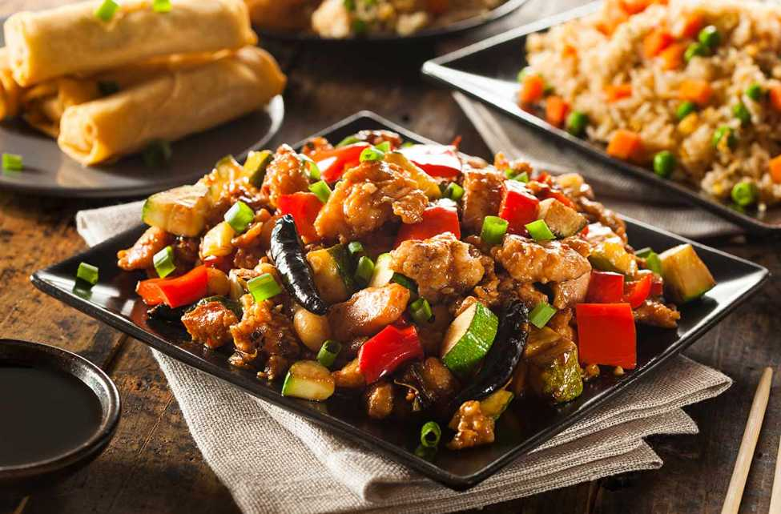

Kung Pao Chicken
Description
kung pao chicken What better way to start this list of popular Chinese foods than with one of China’s most renowned and famous dishes: kung pao chicken. This classic dish originated from Sichuan cuisine (south-western China) and is a meal that is often first associated with typical Chinese food and cuisine. With stir-fried chicken, peanuts, vegetables, and chili peppers, this dish is sure to satisfy in its perfected simplicity.
Difficulty: Easy
Time to Make: 30 minutes
Ingredients
- 2 boneless, skinless chicken breasts, diced
- 2 tablespoons soy sauce
- 1 tablespoon sesame oil
- 1 tablespoon cornstarch
- 2 tablespoons vegetable oil
- 3 cloves garlic, minced
- 1 teaspoon fresh ginger, minced
- 1 bell pepper, diced
- 1/2 cup unsalted peanuts
- 2 green onions, chopped
- 1/4 cup water
- 2 tablespoons rice vinegar
- 1 tablespoon hoisin sauce
- 1 tablespoon chili paste
Steps:
- In a bowl, mix soy sauce, sesame oil, and cornstarch. Add chicken and toss to coat.
- Heat vegetable oil in a large skillet over medium-high heat. Add chicken and cook until browned.
- Add garlic and ginger to the skillet and cook for 1 minute.
- Add bell pepper, peanuts, and green onions to the skillet and cook for 2 minutes.
- In a small bowl, mix water, rice vinegar, hoisin sauce, and chili paste. Pour over chicken mixture.
- Cook for 2-3 minutes until sauce thickens and chicken is cooked through.
- Serve hot over rice.